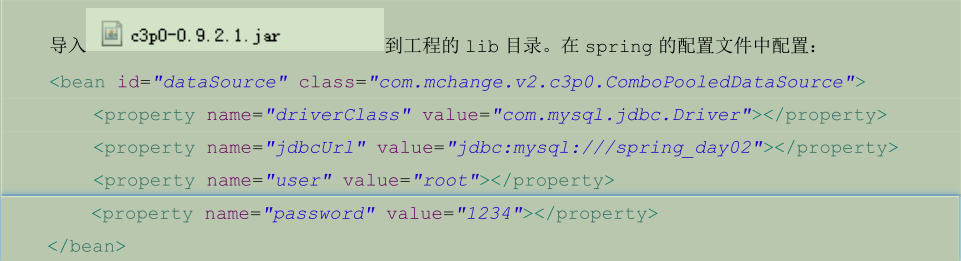

spring中的JdbcTemplate
持久层总图

配置数据源
C3P0数据源

DBCP数据源

spring内置数据源

引入外部配置文件

JdbcTemplate的概述

JdbcTemplate的作用
用于和数据库交互，实现对表的CRUD（create、retrieve读取、update、delete）操作
JdbcTemplate template = context.getBean("jdbcTemplate",JdbcTemplate.class);
template.execute("insert into account(name,money) values('ccc',1000)");
// 保存
template.update("insert into account(name,money) values (?,?)","eee",333f);
// 更新
template.update("update account set name =?,money=? where id=?","test",4567,7);
// 删除
template.update("delete from account where id=?",8);
// 查询所有
// List<Account> accounts = template.query("select * from account where money>?",new AccountRowMapper(),1000f);
// List<Account> accounts = template.query("select * from account where money>?",new BeanPropertyRowMapper<Account>(Account.class),500f);
// for(Account account:accounts){
// System.out.println(account);
// }
// 查询一个
List<Account> accounts = template.query("select * from account where id=?",new AccountRowMapper(),6);
System.out.println(accounts.isEmpty()?"没有内容":accounts.get(0));
//查询返回一行一列（使用聚合函数，但不加group by子句）
int count = template.queryForObject("select count(*) from account where money>?",Integer.class,500f);
System.out.println(count);
JdbcDaoSupport的使用
使用原因：
对于之前的dao实现类编写方式，如果有多个dao实现类，每个类都要new一个jdbc封装类对象（例如JdbcTempalte），然后通过对象调用类的方法进行数据的CRUD操作，比较繁琐
解决方法：
定义一个父类，在父类中new一个jdbc封装类对象，然后让dao实现类去继承该类
spring提供了该父类，也就是JdbcDaoSupport

两种方式的区别

spring基于AOP的声明式事务控制
spring关于事务控制的说明

spring中引入事务的步骤
1、添加pom坐标
<dependency>
<groupId>org.springframework</groupId>
<artifactId>spring-tx</artifactId>
<version>5.1.6.RELEASE</version>
</dependency>
2、导入xml约束
<?xml version="1.0" encoding="UTF-8"?>
<beans xmlns="http://www.springframework.org/schema/beans"
xmlns:xsi="http://www.w3.org/2001/XMLSchema-instance"
xmlns:context="http://www.springframework.org/schema/context"
xmlns:tx="http://www.springframework.org/schema/tx"
xmlns:aop="http://www.springframework.org/schema/aop"
xsi:schemaLocation="http://www.springframework.org/schema/beans
http://www.springframework.org/schema/beans/spring-beans.xsd
http://www.springframework.org/schema/context
http://www.springframework.org/schema/context/spring-context.xsd
http://www.springframework.org/schema/tx
http://www.springframework.org/schema/tx/spring-tx.xsd
http://www.springframework.org/schema/aop
http://www.springframework.org/schema/aop/spring-aop.xsd">
基于XML的事务控制（推荐）
<!-- spring中基于XML的声明式事务控制配置步骤
1、配置事务管理器
2、配置事务的通知
导入事务约束，tx名称空间和约束，同时也需要aop的
使用tx:advice标签配置事务通知
属性：
id;事务唯一标识
transaction-manager：给事务通知提供一个事务管理器引用
3、配置AOP中的通用切入点表达式
4、建立事务通知和切入点表达式的关系
5、配置事务的属性
在事务通知tx:advice标签的内部
-->
<!-- 配置事务管理器-->
<bean id="transactionManager" class="org.springframework.jdbc.datasource.DataSourceTransactionManager">
<property name="dataSource" ref="dataSource"/>
</bean>
<!-- 配置事务的通知-->
<tx:advice id="txAdvice" transaction-manager="transactionManager">
<!-- 配置事务的属性
name：要添加事务的切入点（方法）
isolation：事务的隔离级别。默认值是DEFAULT，表示使用数据库的默认隔离级别
propagation：事务的传播行为。默认值是REQUIRED，表示一定会有事务，增删改查的选择。查询方法可以选择SUPPORTS。
read-only：事务是否只读。只有查询方法才能设置为true。默认值是false，表示读写。
timeout：事务的超时时间，默认值是-1，表示永不超时。如果指定值，以秒为单位。
rollback-for：用于指定一个异常，当产生该异常时，事务回滚，产生其他异常时，事务不回滚。没有默认值，表示任何异常都回滚。
no-roolback-for：用于指定一个异常，当产生该异常时，事务不回滚，产生其他异常时，事务回滚。没有默认值，表示任何异常都回滚。
-->
<tx:attributes>
<tx:method name="*" propagation="REQUIRED" read-only="false"/>
<!-- 上面name属性值为全通配，下面name属性值为部分通配，下面的优先级高于上面，可以匹配查询语句，但是查询语句必须以find开头-->
<tx:method name="find*" propagation="SUPPORTS" read-only="true"/>
</tx:attributes>
</tx:advice>
<!-- 配置AOP-->
<aop:config>
<!-- 配置切入点表达式-->
<aop:pointcut id="pt1" expression="execution(* com.itheima.service.impl.*.*(..))"/>
<!-- 建立切入点表达式和事务通知的关系-->
<aop:advisor advice-ref="txAdvice" pointcut-ref="pt1"/>
</aop:config>
基于注解的事务控制
<!-- spring中基于注解的声明式事务控制配置步骤
1、配置事务管理器
2、开启spring对注解事务的支持
3、再需要事务支持的地方使用@Transactional注解
-->
<!-- 配置事务管理器-->
<bean >
<property name="dataSource" ref="dataSource"/>
</bean>
<!-- 开启spring对注解事务的支持-->
<tx:annotation-driven transaction-manager="transactionManager"/>

说明
从对比可以看出，使用注解方式配置事务控制在XML配置上省去很多，但是在注解配置上，却更加复杂，因为XML配置通知时可以使用通配符来匹配，既保证有针对性的选择切入点，有可以匹配多个切入点，使配置更简单
基于纯注解的事务控制
步骤
1、编写配置类
主配置类

子配置类：数据库配置类，提供jdbcTemplate

子配置类：事务控制类，初始化transactionManager对象

2、编写dao持久层，使用jdbcTemplate，提供持久层dao对象

3、编写service业务层，使用持久层dao对象，同时引入事务控制，提供业务层service对象

4、编写测试类，导入配置，使用service对象

spring中基于编程式事务控制
步骤
1、编写XML配置文件
<!-- 配置事务管理器-->
<bean >
<property name="dataSource" ref="dataSource"/>
</bean>
<!-- 引入事务模板对象，由spring提供-->
<bean >
</bean>
2、业务层使用事务模板对象进行事务控制

这种方式的缺陷
业务层中每个业务方法都需要使用事务模板对象来进行处理，这会造成大量的重复代码，和spring引入AOP初衷不符
spring5的新特性
支持的jdk版本>=1.8

jdk1.7与1.8在创建对象上用时的比较

其他方面

核心容器的更新

JetBrains Kotlin语言支持

响应式编程风格

Junit5支持